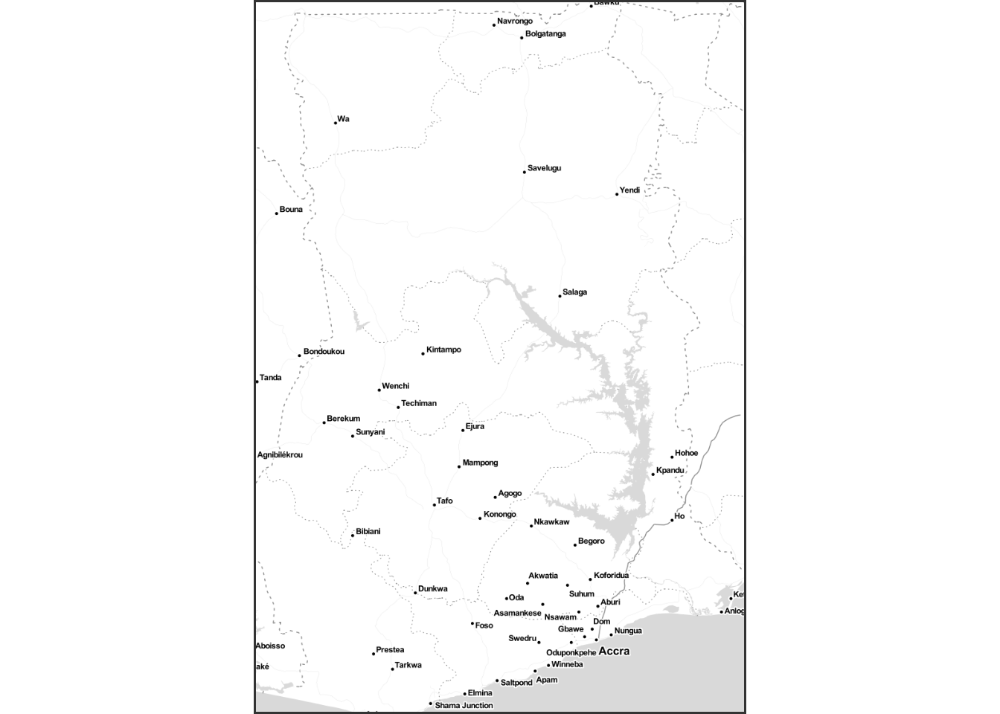

4 Spatial data loading
4.1 Spatial data preparation
- We are loading the spatial part of DHS data for SAE.
- In this example, we use the geographic information set from DHS webpage.
- It is assumed to be stored in the following location:
country_shp <- st_read("../data/2011 DHS/Spatial/GHGE71FL/GHGE71FL.shp", quiet = TRUE)4.2 Important Notes
- There are some occasions in which cluster coordinate information is missing in survey data.
- It varies with the country, so the user needs to pay attention to the availability and other potential issues.
## handling missing coord
mis_mark <- country_shp %>% filter((LATNUM == 0 & LONGNUM ==0))
country_shp <- country_shp %>% filter(!(LATNUM == 0 & LONGNUM ==0)) %>% filter(!is.na(LATNUM))4.3 Map image tiles downloading
bounding_box <- st_bbox(country_shp) %>% as.numeric # getting the bounding box
country_map <- get_stamenmap(bbox = bounding_box, messaging = FALSE, zoom = 8,
maptype = "toner-lite", format = c("png"))
ggmap(country_map, extent = "device") 
- To download the map image tiles, we first need to identify the bounding box of the (country) map.
- Once bounding box is found, the code below uses bounding box information to download the matching part of the image tiles.
country_mapobject will be used as a base layer for plotting in the remaining part.